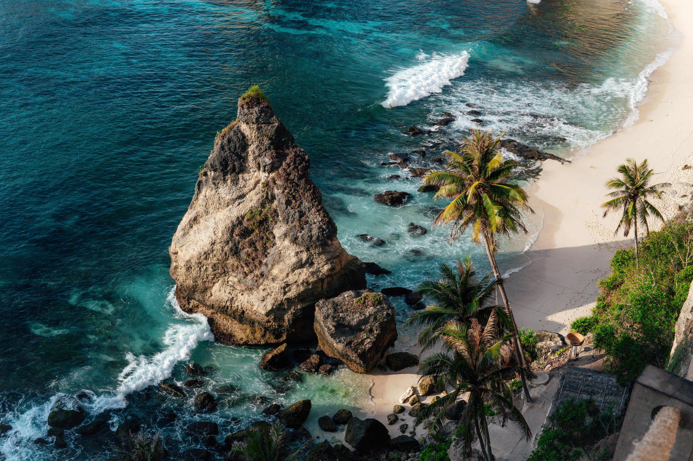
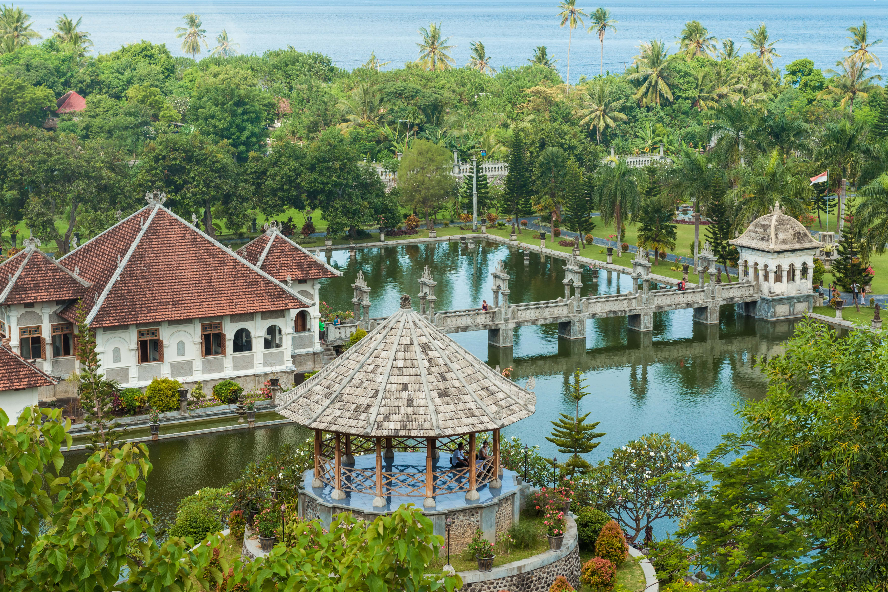
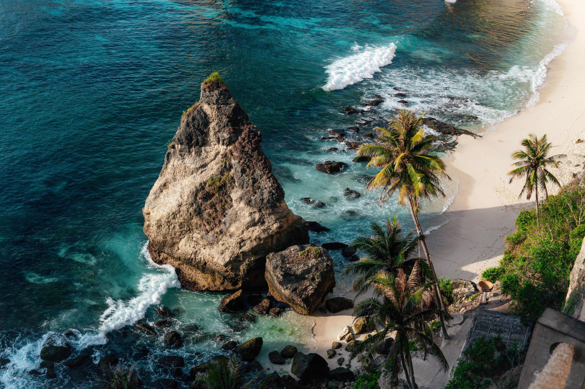
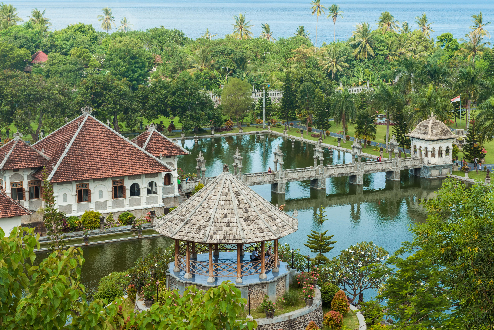

Bem-vindo a Bali
Bali, conhecida como a "Ilha dos Deuses", é um destino paradisíaco na Indonésia que encanta visitantes com sua beleza natural, cultura rica e hospitalidade calorosa. Rodeada por praias de areias douradas e águas cristalinas, Bali é o lugar perfeito para relaxar e explorar. Entre os pontos turísticos imperdíveis estão o Templo de Uluwatu, situado dramaticamente sobre um penhasco, e o Templo de Tanah Lot, famoso pelos seus pores do sol espetaculares. Em Ubud, coração cultural da ilha, irá encontrar arrozais deslumbrantes como o Tegalalang Rice Terrace, além da Floresta dos Macacos e galerias de arte locais. Para os aventureiros, o vulcão Monte Batur oferece trilhos e vistas inesquecíveis ao amanhecer. Não deixe de aproveitar também as praias icônicas de Seminyak e Nusa Dua, ideais para surf e mergulho, além de vivenciar um autêntico ritual balinês ou uma massagem tradicional. Bali é uma mistura perfeita de tranquilidade e aventura, que promete memórias inesquecíveis.
Dicas de Viagem
- Assista ao pôr do sol no templo de Tanah Lot.
- Experimente a culinária balinesa em mercados locais.
- Faça um passeio de bicicleta pelas plantações de arroz em Ubud.
- Reserve tempo para relaxar num spa tradicional balinês.
 


